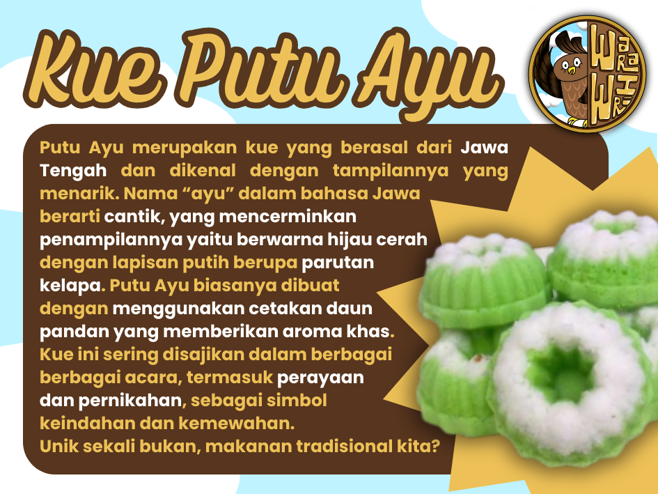
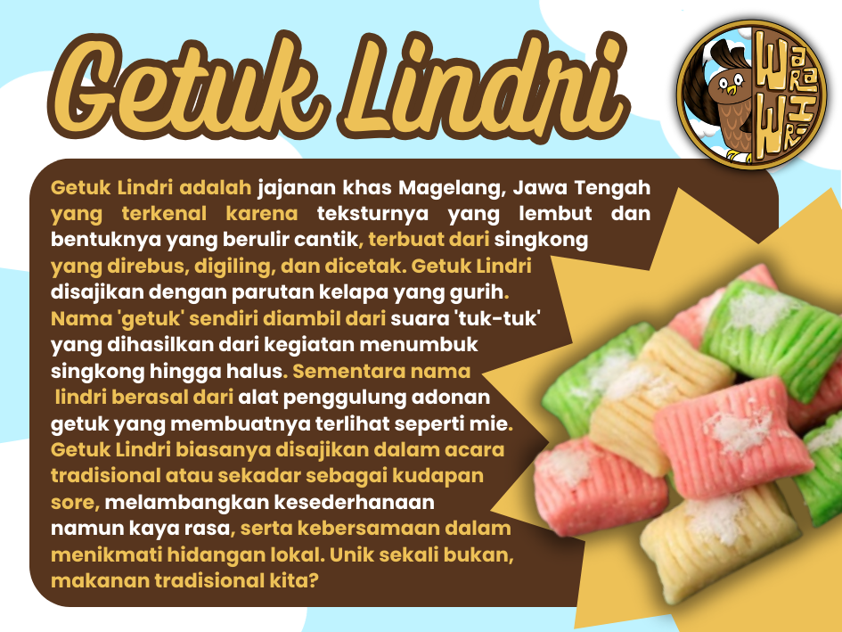
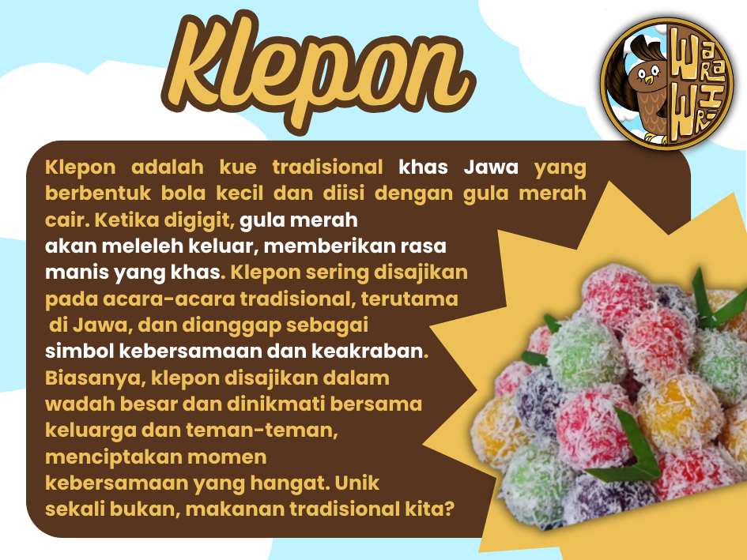
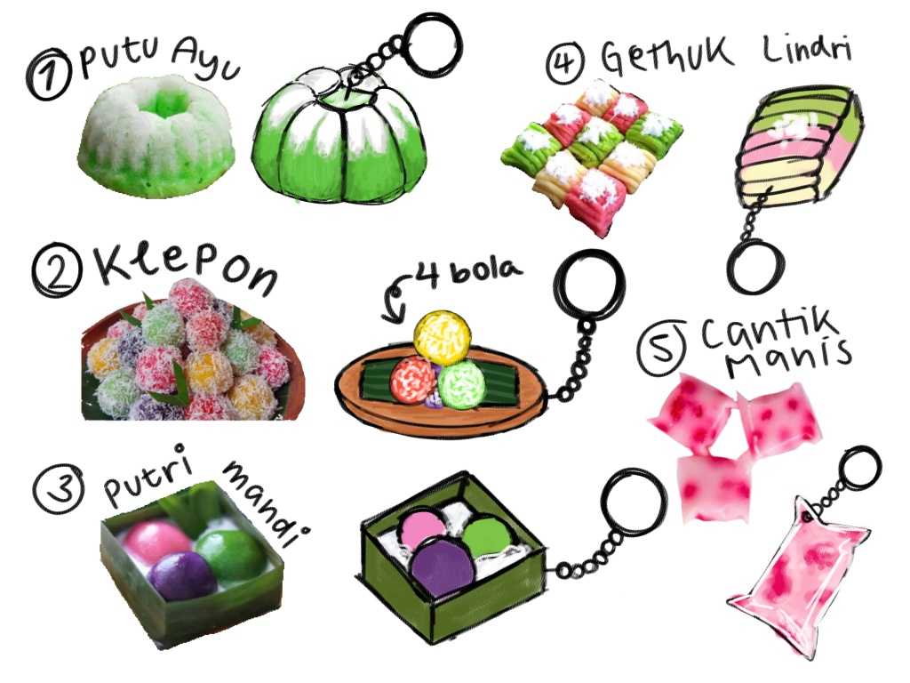
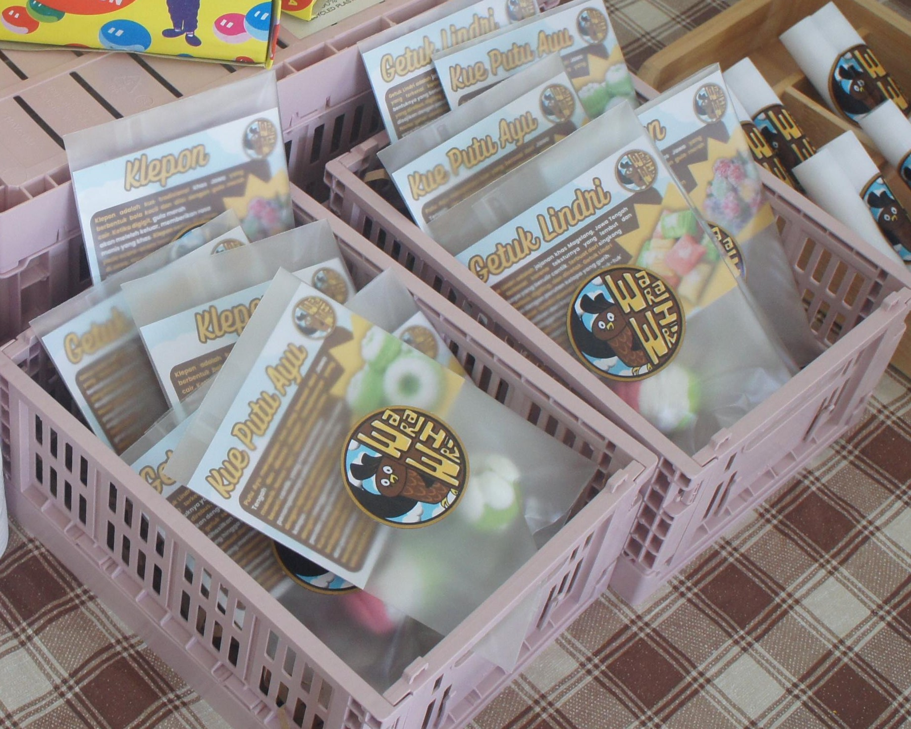

Laporan Produk IL PPKN
Perencanaan Produk
Dalam rangka menyelesaikan project bazaar PPKN untuk membuat produk yang bertemakan kebudayaan Indonesia. Kelompok kami harus membuat produk yang membuat gantungan kunci berbahan dasar tanah liat berbentuk kue-kue tradisional. Sebelum kami mulai membuat produk pasti nya kami melakukan diskusi terlebih dahulu. Pada awal diskusi, kami tidak langsung memutuskan untuk membuat MagNyusss. Kami memiliki banyak sekali ide, namun tidak ada yang cocok untuk kami. Akhirnya, kami memutuskan untuk membuat gantungan kunci yang berbentuk alat musik tradisional dan makanan tradisional. Kami juga memutuskan untuk menggunakan clay sebagai bahan dasarnya. Hal ini kami putuskan berdasarkan keputusan bersama dan sudah melalui banyak sekali pemikiran.
Langkah selanjutnya yang kami lakukan adalah mencari tahu terlebih dahulu latar belakang dari bentuk benda-benda tradisional yang berasal dari Jawa. Setelah kami mencari tahu, kami memutuskan untuk membuat gantungan kunci dengan bentuk angklung, kendang, saron demung, bakso, tumpeng, dan klepon dengan menggunakan DAS Clay, sebuah merek tanah liat yang cukup berkualitas. Kami memilih bentuk-bentuk tersebut karena sesuai dengan tema bazaar kami. Kami juga berencana untuk menyajikan produk dengan kartu yang berisi informasi dan fakta unik tentang alat musik tradisional atau makanan tradisional tersebut. Kami sekelompok sudah setuju untuk membuat gantungan kunci bersama dengan kartunya, dan mulai membagi tugas untuk membeli bahan-bahan dan mencari informasi tentang produk.
Pembagian Tugas
- Evelyn: Membuat produk, mencari informasi untuk kartu, membeli kemasan, mencetak kartu.
- Michelle: Membuat desain kartu, Membuat produk, mencari informasi untuk kartu.
- Claire: Membeli clay dan membuat produk.
- Quinn: Mencari informasi untuk kartu, membuat produk.
- Giselle : Mencari informasi untuk kartu, membuat produk.
- Patrice: Mencari informasi untuk kartu.

Kesesuaian Produk dengan Tema Kebudayaan, Toleransi, dan Tenggang Rasa
Produk magnet yang berbentuk kue-kue tradisional memiliki hubungan yang erat dengan tema kebudayaan, toleransi, dan tenggang rasa, karena produk ini mencerminkan nilai-nilai budaya yang kaya, menghormati keberagaman, dan dapat memperluas wawasan pelanggan. Kue-kue tradisional merupakan bagian dari warisan budaya yang dapat mencerminkan identitas suatu daerah. Produk magnet kue tradisional ini dapat menjadi simbol pelestarian budaya karena menampilkan keunikan kuliner tradisional di Indonesia, seperti kue klepon, kue gethuk lindri, dan kue putu ayu. Selain itu, produk magnet kue tradisional ini dapat mengajak pembeli untuk mengenal dan menghargai keanekaragaman budaya Indonesia melalui visual yang menarik. Produk magnet kue tradisional ini dapat berfungsi sebagai media promosi budaya yang inovatif dan menarik, terutama untuk generasi muda yang mungkin kurang mengetahui tentang kue-kue tradisional. Sehingga, produk ini juga melestarikan budaya yang ada di Indonesia, terutama makanan tradisional. Produk magnet kue tradisional juga dapat membantu memperkuat kembali budaya lokal.
Selanjutnya, Produk magnet kue tradisional ini juga mencerminkan sikap toleransi melalui pengenalan kue tradisional dari berbagai daerah di Indonesia yang masing-masing pastinya memiliki makna budaya tersendiri. Di setiap produk MagNyusss, kami menyertai kartu yang berisi informasi dan fun facts dari masing-masing makanan tradisional, seperti asalnya, arti dari makanan tersebut, dll. Produk magnet kue tradisional ini juga mengingatkan kita akan perbedaan yang ada di Indonesia namun tetap menjadi bagian dari kesatuan bangsa.
  Proses Pembuatan dan Penyajian Produk
Pada awalnya, kami berencana untuk membuat produk yang berupa gantungan kunci berbahan tanah liat, dan berbentuk alat musik dan aneka makanan tradisional. Seiring dengan berjalannya waktu, kami memutuskan untuk membuat bentuk kue-kue tradisional saja karena membuat alat musik cukup sulit dan tidak memungkinkan untuk kami buat. Kami juga beberapa kali mengubah rencana bentuk kue-kue tradisional tersebut. Saat sedang mencoba membuatnya, kami mengalami kesulitan untuk membuatnya dengan tanah liat. Kami sempat menjadi bimbang untuk sepenuhnya mengubah rencana awal kami. Lalu, kami mendapat ide untuk mengganti bahan dasarnya, menjadi Polymer Clay, karena jauh lebih mudah untuk digunakan. Kami menggunakan Polymer Clay putih lalu diberi warna sesuai kebutuhan, menggunakan pewarna makanan, cat, dan lain sebagainya.
Selain itu, kami juga mengubah rencana produk tersebut; dari gantungan kunci menjadi magnet atau hiasan kulkas, supaya lebih unik dan variatif. Pada saat mencoba membuatnya dengan Polymer Clay, kami awalnya juga mengalami kesulitan untuk membuatnya. Namun, kami terus mencoba sampai akhirnya berhasil. Kami menamakan produk tersebut “MagNyusss”, diambil dari kata “magnet”. Sebelumnya, kami juga sudah melakukan sketsa jenis kue tradisional yang ingin kami buat. Dari 6 pilihan jenis kue tradisional berbeda, kami hanya menjual 3 jenis. Kami juga sempat mengkhawatirkan produk tersebut tidak laku, sehingga kami menjualnya dengan stok terbatas. Ternyata, produk ini cukup laku dan habis terjual dalam waktu yang cepat. Salah satu hal unik yang terjadi adalah banyak pelanggan yang mengira itu kue tradisional sungguhan.
Produk MagNyusss kami memiliki tiga varian bentuk kue tradisional yang berasal dari Jawa, yaitu Gethuk Lindri, Putu Ayu, dan Klepon. Masing-masing produk MagNyusss kami disertai dengan kartu yang berisi informasi lengkap mengenai masing-masing kue tradisional. Mulai dari asal muasalnya, fakta-fakta unik, biasa digunakan untuk apa, dll. Adanya tiga varian bentuk tersebut juga mencerminkan sikap menghargai perbedaan budaya yang ada di Indonesia. Kami menyajikan produk dengan kemasan plastik yang berkualitas, dan kami menyertai produk dan kartunya di dalam plastik tersebut.
Kesesuaian Produk dengan Rencana
Produk kami mengalami banyak sekali perubahan rencana. Setelah bahan-bahan kami dibeli, kami mulai bereksperimen dan membuat produknya, tetapi kami langsung merasa bahwa untuk membuat gantungan kunci dengan bentuk-bentuk tersebut menggunakan bahan dasar DAS clay sedikit sulit karena bentuk nya yang cukup rumit dan DAS Clay adalah tipe tanah liat yang sulit dibentuk, cepat mengeras, dan kurang fleksibel. Sehingga, kami memutuskan untuk mencoba mencari alternatif lain.
Setelah kami berdiskusi, kami memutuskan untuk mengganti bahan dasar produk; kami tidak jadi menggunakan DAS Clay, melainkan menggunakan Polymer Clay yang lebih mudah dibentuk, yang biasa digunakan anak-anak untuk berkreasi. Kami juga memutuskan untuk tidak membuat gantungan kunci, melainkan magnet yang berbentuk kue-kue tradisional. Kami mencari tahu kue-kue tradisional khas Jawa, dan kami sekelompok setuju untuk membuat Gethuk, Klepon, dan Putu Ayu. Kami tidak langsung membuat produk nya tetapi kami mencari referensi gambar - gambar terlebih dahulu lalu kami menggambar nya terlebih dahulu melalui media digital. Setelah kami menggambarnya, kami segera membuat produknya lalu kami memberi nama dari produk ini MagNyusss. Mag dari kata magnet, dan Nyusss dari kata Maknyus (istilah untuk makanan yang lezat).
Kami membuat produk ini tidak hanya karena semata-mata produk ‘tradisional’, tetapi karena produk ini terkandung makna yang kami ingin para pelanggan ketahui. Makna dari produk ini sendiri adalah menggambarkan upaya untuk memperkenalkan dan melestarikan kue - kue tradisional yang menjadi warisan budaya suatu daerah. Selain itu, produk magnet ini menunjukkan kreativitas dalam memadukan seni kerajinan tangan dengan elemen tradisional. Yang terakhir, kami juga berharap dengan adanya produk ini pembeli dapat mengetahui seberapa penting nya toleransi dan menghargai perbedaan terhadap keragaman budaya yang ada di Indonesia.
Kesimpulannya, perencanaan yang kami buat sangat berbeda dengan hasil akhirnya. Tetapi, kami sangat puas dengan hasil akhirnya. Dimulai dari rencana membuat gantungan kunci berbentuk alat musik tradisional dan kue-kue tradisional, menghapus rencana membuat bentuk alat musik, mengganti bahan dasarnya, hingga mengubah rencana dari membuat gantungan kunci menjadi magnet hiasan kulkas.